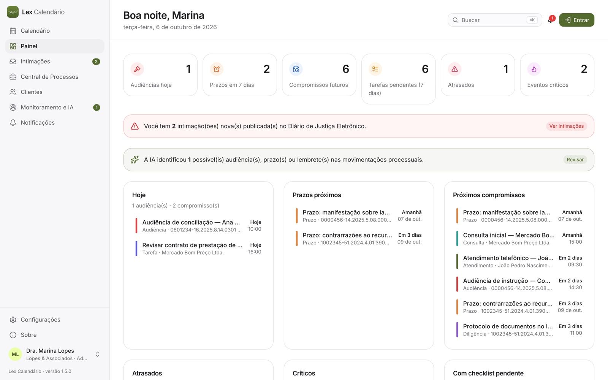
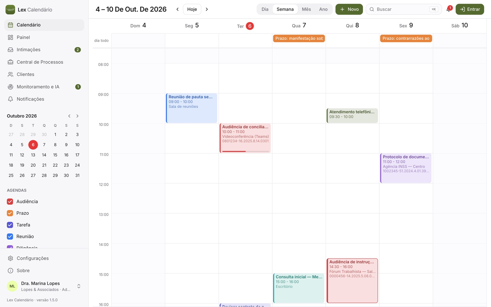
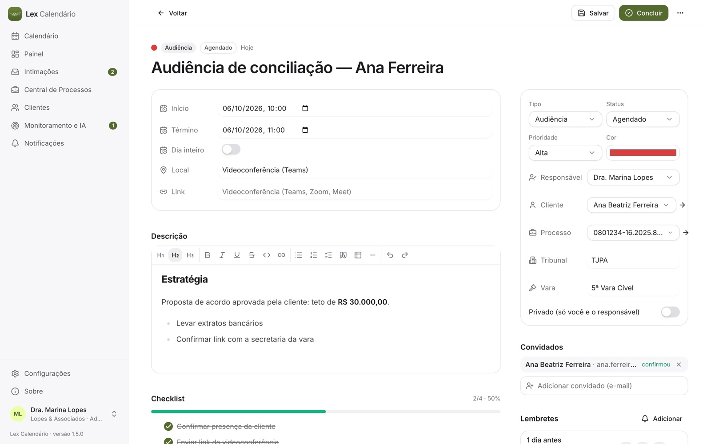
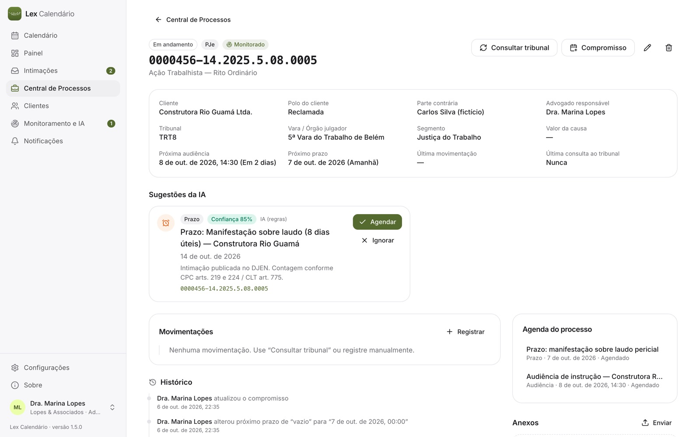
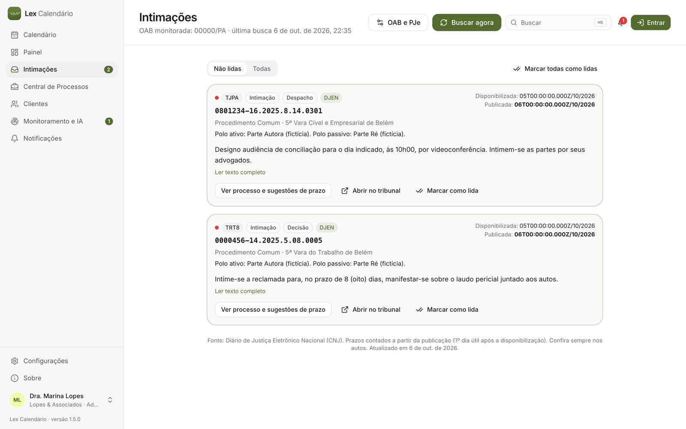

O que faz
Recursos principais
- Calendário de dia, semana, mês e ano, no padrão dos melhores aplicativos, com audiências em destaque.
- Prazos contados pelo CPC (dias úteis, recesso de 20/12 a 20/1 e feriados do escritório).
- Intimações do DJEN (CNJ) pela OAB, nome ou CPF; busca de processos por nome, CPF e CNPJ; mandados (BNMP).
- Clientes, processos, parceiros e comunicações por e-mail (Gmail), com redação assistida por IA.
- Sincronização opcional com o Google Agenda; funciona sem internet e sem conta.
- Backup completo, com lembrete a cada 7 dias.
TelasPainel: audiências, prazos e intimações do dia · toque para ampliar Calendário semanal · toque para ampliar Cada compromisso é um espaço de trabalho · toque para ampliar Processo com sugestão de prazo pela IA · toque para ampliar Central de Intimações (DJEN) · toque para ampliar
Como é o Lex Calendário










Dados fictícios de demonstração.
Manual
Como instalar e começar
- Baixe o instalador do seu sistema (botão Baixar ou os links diretos acima). Gratuito, sem cadastro.
- Dê dois cliques no instalador do seu sistema (
.exeno Windows,.pkgno Mac,.debno Linux) e siga Avançar, Avançar, Concluir. - O Lex abre direto no calendário. Para sincronizar com o Google, use Entrar no canto superior direito.
- Para atualizar: Configurações → Aplicativo → Atualizar a partir do arquivo; o Lex faz backup antes.
Prazos
Contagem em dias úteis, exclusão do dia do começo, prorrogação e recesso forense (CPC, arts. 219, 220 e 224).
Intimações
Cadastre a OAB na Central de Intimações; abra a publicação para cadastrar processo e cliente.
Comunicações
Escreva ou peça à IA, programe a data e envie pelo seu Gmail, com a assinatura do perfil.
Dados
Ficam no seu computador (Mac: Application Support; Windows/Linux: Documentos/Lex Calendário).
Importante: O Lex Calendário é ferramenta de apoio: a conferência dos prazos nos autos e nos diários oficiais é do advogado.
Dúvidas na primeira abertura? Veja as orientações gerais.